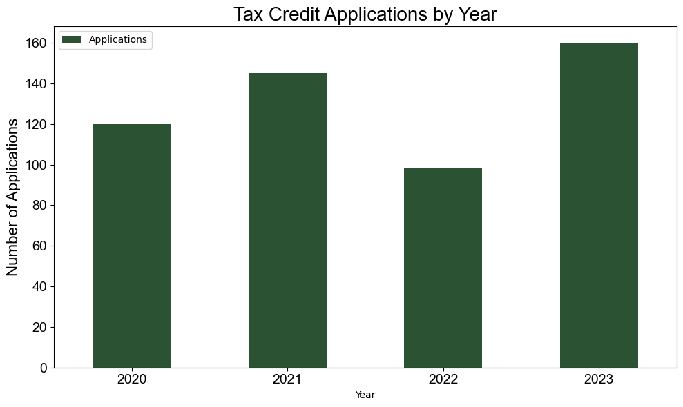
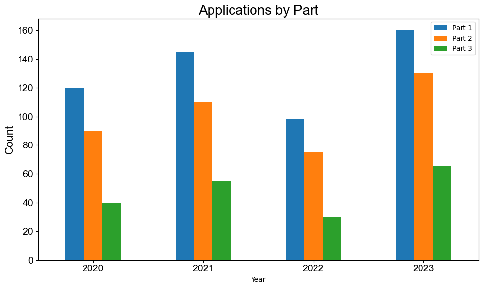
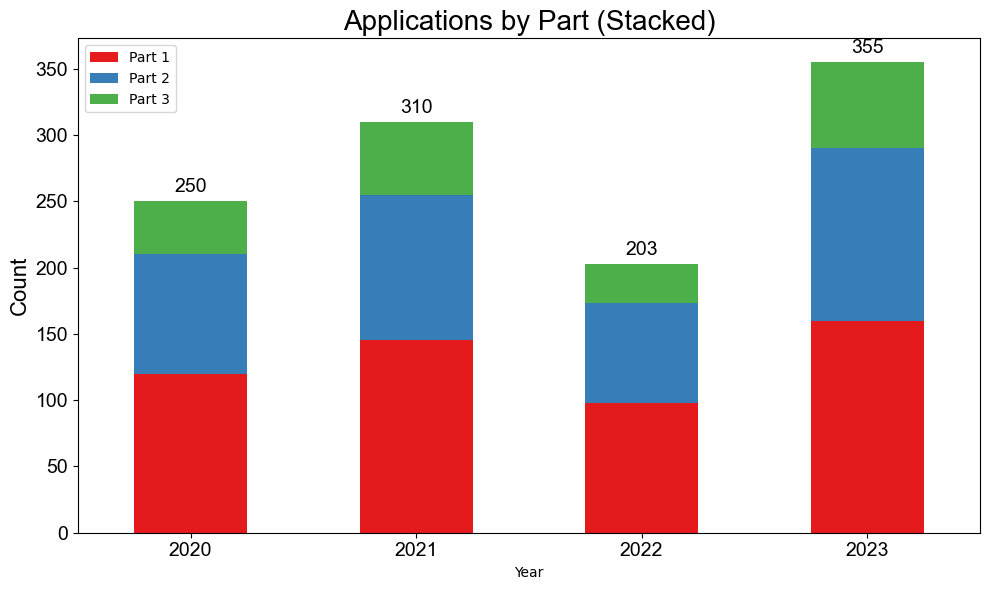
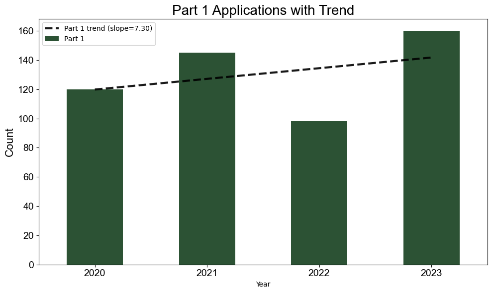
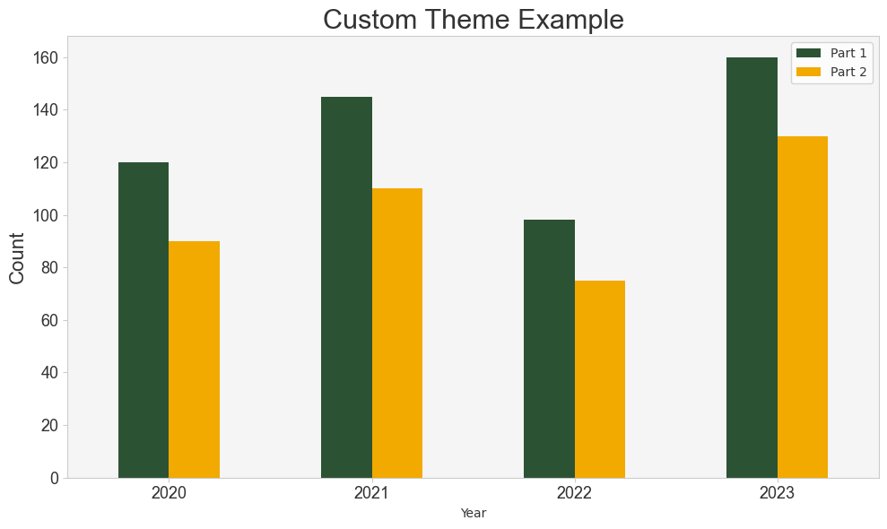

Bar Charts¶
Module: Helper_Functions.reporting.graph_creation_2
create_bar_chart_from_df()¶
Creates a grouped or stacked bar chart from a DataFrame with full control over colors, fonts, trendlines, bar annotations, and theme.
Basic usage¶
import pandas as pd
import Helper_Functions.reporting.graph_creation_2 as gc
df = pd.DataFrame({
"Year": [2020, 2021, 2022, 2023],
"Applications": [120, 145, 98, 160],
})
gc.create_bar_chart_from_df(
df,
columns="Applications",
x="Year",
title="Tax Credit Applications by Year",
ylabel="Number of Applications",
)

Grouped bars (multiple columns)¶
df = pd.DataFrame({
"Year": [2020, 2021, 2022, 2023],
"Part 1": [120, 145, 98, 160],
"Part 2": [90, 110, 75, 130],
"Part 3": [40, 55, 30, 65],
})
gc.create_bar_chart_from_df(
df,
columns=["Part 1", "Part 2", "Part 3"],
x="Year",
title="Applications by Part",
ylabel="Count",
palette="tab10",
)

Stacked bars with value annotations¶
gc.create_bar_chart_from_df(
df,
columns=["Part 1", "Part 2", "Part 3"],
x="Year",
title="Applications by Part (Stacked)",
ylabel="Count",
stacked=True,
annotate_bars=True,
stack_label_style="total", # label total at top; use "segment" for per-bar labels
palette="Set1",
)

Adding a trendline¶
gc.create_bar_chart_from_df(
df,
columns="Part 1",
x="Year",
title="Part 1 Applications with Trend",
ylabel="Count",
show_trendlines=True,
trendline_style="--",
trendline_linewidth=3,
trendline_palette=['black'],
)

Custom theming¶
gc.create_bar_chart_from_df(
df,
columns=["Part 1", "Part 2"],
x="Year",
title="Custom Theme Example",
ylabel="Count",
palette=["#2C5234", "#F2A900"],
plot_bg_color="#F5F5F5",
figure_bg_color="#FFFFFF",
text_color="#333333",
frame_color="#CCCCCC",
font="Arial",
title_font_size=22,
axis_font_size=16,
tick_font_size=13,
)

Parameter reference¶
| Parameter | Type | Default | Description |
|---|---|---|---|
df |
pd.DataFrame |
required | Data to plot |
columns |
str or list |
None (all columns) |
Y-value columns |
x |
str |
None (index) |
X-axis column |
stacked |
bool |
False |
Stack bars |
title |
str |
None |
Chart title |
xlabel / ylabel |
str |
None |
Axis labels |
figsize |
tuple |
(10, 6) |
Figure size in inches |
palette |
str or list |
green/gold | Bar colors |
legend |
bool |
True |
Show legend |
y_min / y_max |
float |
None |
Y-axis bounds |
font |
str |
"Arial" |
Font family |
title_font_size |
int |
20 |
Title font size |
axis_font_size |
int |
16 |
Axis label font size |
tick_font_size |
int |
14 |
Tick label font size |
x_tick_rotation |
int |
0 |
X tick rotation degrees |
x_tick_ha |
str |
"center" |
X tick horizontal alignment |
show_y_ticks |
bool |
True |
Hide y-axis ticks if False |
show_trendlines |
bool |
False |
Overlay linear trendlines |
trendline_style |
str |
"--" |
Trendline line style |
trendline_linewidth |
float |
2 |
Trendline width |
trendline_alpha |
float |
0.9 |
Trendline opacity |
trendline_palette |
str, list, or None |
green/gold | Trendline colors |
annotate_bars |
bool |
False |
Add value labels to bars |
annotation_font_size |
int |
14 |
Annotation font size |
annotation_rotation |
int |
0 |
Annotation rotation |
annotation_fmt |
str |
"{:,.0f}" |
Annotation format string |
stack_label_style |
str |
"total" |
"total" or "segment" |
y_tick_fmt |
str |
'{x:,.0f}' |
Y-axis tick format |
plot_bg_color |
str |
None |
Axes background color |
figure_bg_color |
str |
None |
Figure background color |
text_color |
str |
None |
All-text color |
frame_color |
str |
None |
Spine and tick color |
legend_facecolor |
str |
None |
Legend background color |
legend_edgecolor |
str |
None |
Legend border color |
legend_framealpha |
float |
None |
Legend background opacity |
Returns: None — displays chart via plt.show().